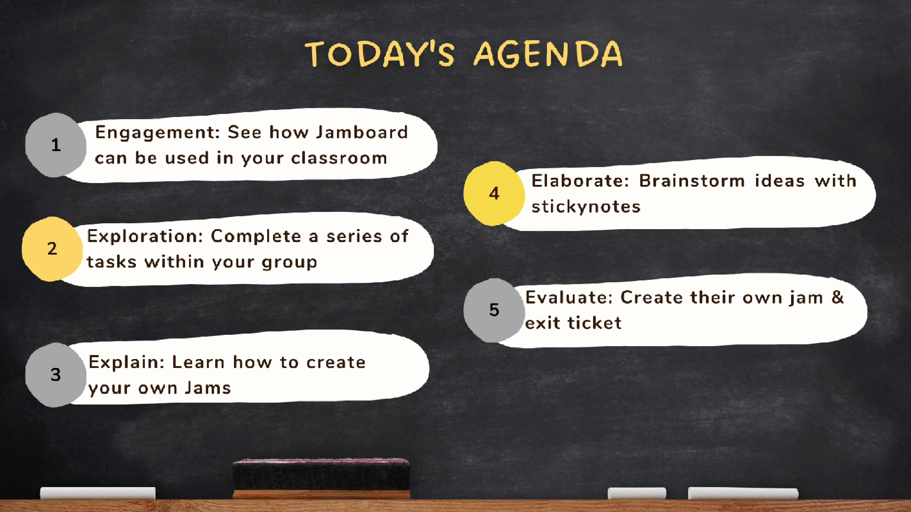
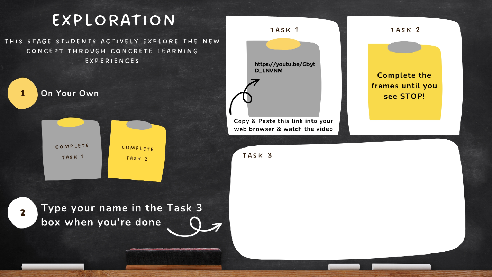
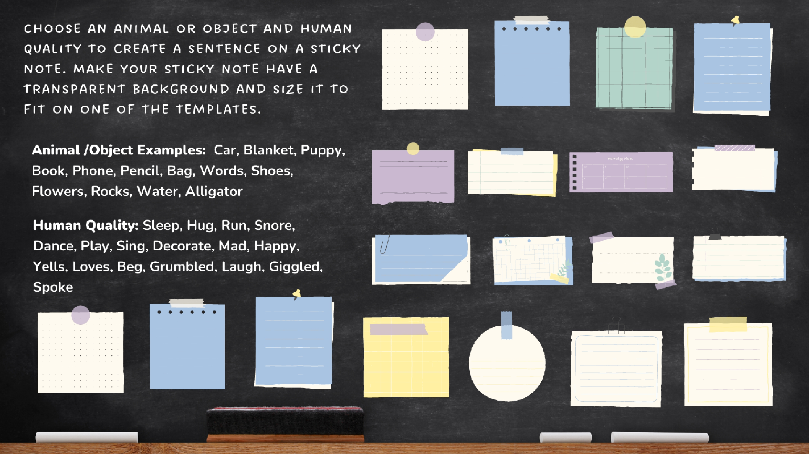
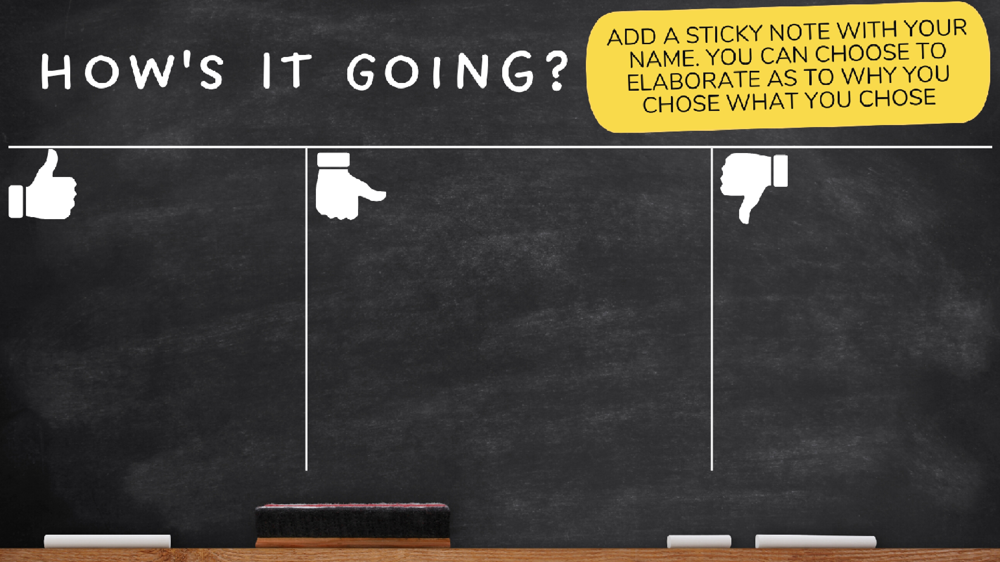
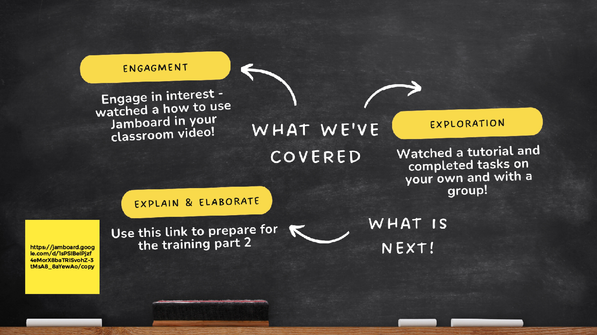
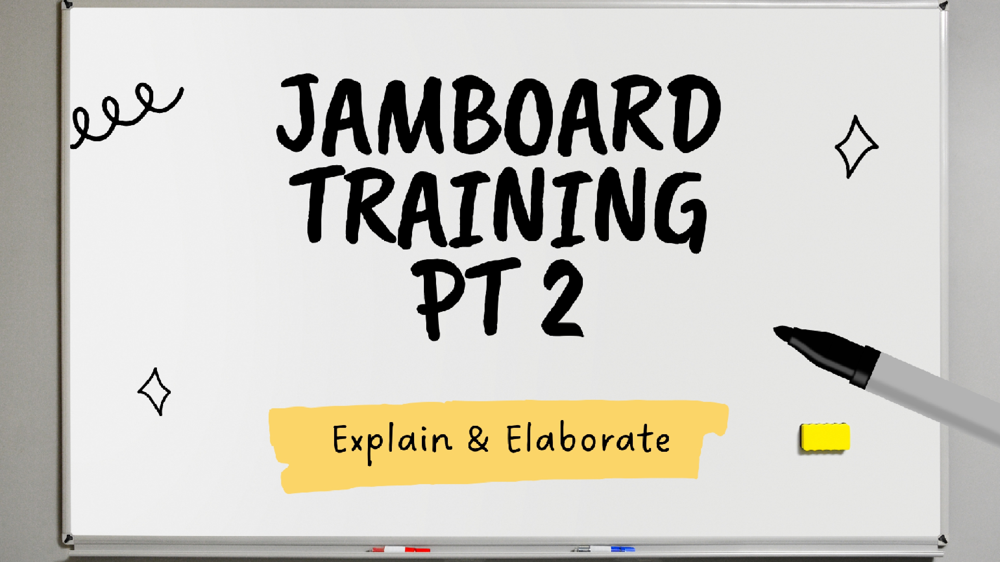
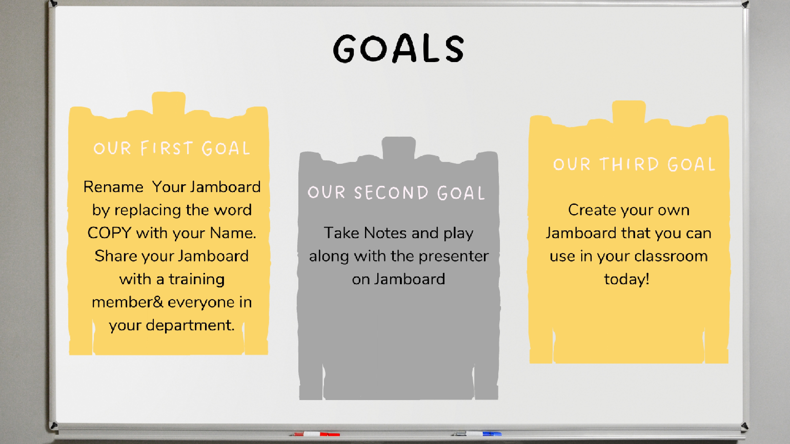
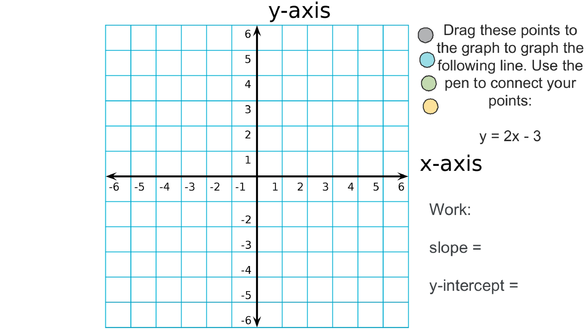
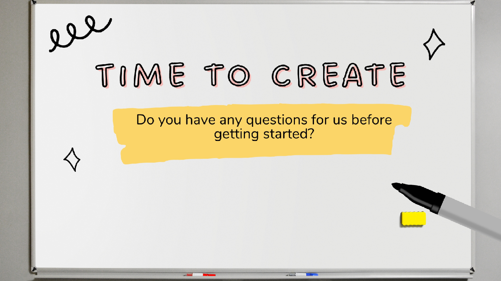

Nearpod Training
- Nearpod is a program that can incorporate several student engagement activities that will display on the students' computers. Teachers can control the presentations or allow self-paced for the students. Either way, at the end of the lesson, teachers will receive data on how the students performed during the activities.
- When creating the material, I wanted teachers to see how it applied to all subjects in the school. I tried to show teachers that there was an add-on in Google Slides that allows you to convert presentations that you already have for your classroom into a Nearpod. Even though teachers had a blast during the professional development, they might have still felt overwhelmed because not many teachers utilize it in their classrooms.
- When presenting the materials to teachers, it was engaging, and teachers had a fun time during the professional development. A weakness is that the presentation went longer than expected. I tried to cover as many activities as possible.
Jamboard Training










- This JamBoard training is focused on teachers with minimal experience utilizing Jamboard in the classroom. Jamboard is a program within Google Suites. It is an engagement tool that can be used as a collaboration among students or completed individually.
- Since this project was targeted toward teachers, I wanted to create the training material to apply to as many subject areas as possible. This would increase buy-in from the teachers, encouraging them to use Jamboard in their classrooms. Creating the materials, I realized quickly that it could be hard for someone to implement outside of the “sticky note” application component if you are not tech-savvy.
- A strength is that the materials look amazing and cover multiple ways to use Jamboard in the classroom. A weakness is that Jamboard only allows teachers to have 20 slides per jam; therefore, the material had to be cut into two different sessions. The way the pacing was implemented was that the first part was to be covered before lunch, and the second part was to be covered after lunch.
Google Training
- This project is provided to students the first week of my middle school science course. Students will watch recorded videos of me walking through the information or tasks that students need to complete. This project will give students the responsibility of understanding and knowing how my class runs. They will also learn how to use different tools used frequently in class.
- This assignment is one of my go-to assignments at the beginning of the school year because I want students to understand my expectations and gain technology skills that we frequently utilize in the classroom. I know from student responses that they didn’t watch all the videos. I know that due to students “breaking the rules,” they didn’t take the assignment seriously. I will always give this assignment to the students because I know how important it is to instill the rules, procedures, and expectations into the students early on.
- The strength of this project is that students can watch the videos themselves at their own pace to complete the tasks and answer the questions independently. The videos are anywhere from zero to ten minutes. Students understand the expectations of my class and can apply new technology skills. The weakness of this project is that Google had completed updates to their system, so my videos needed to be updated a year later. I have yet to complete new videos. I also have minimal experience with video editing, so the videos are raw and posted after one shot.